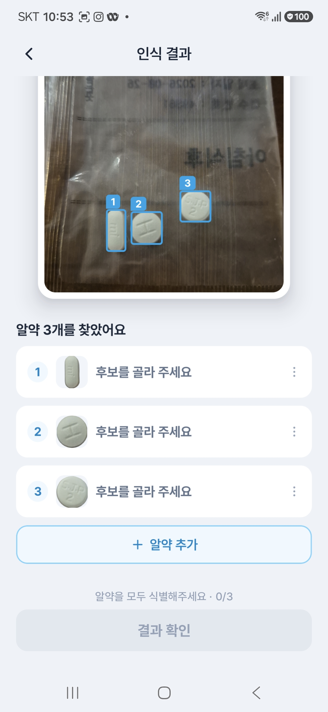
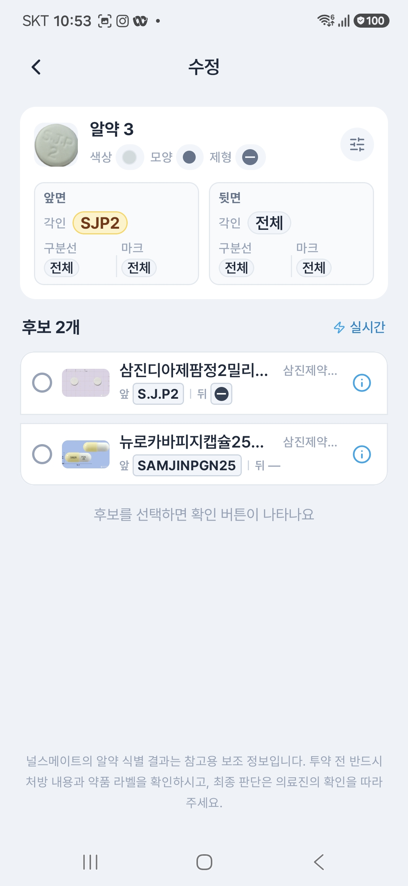
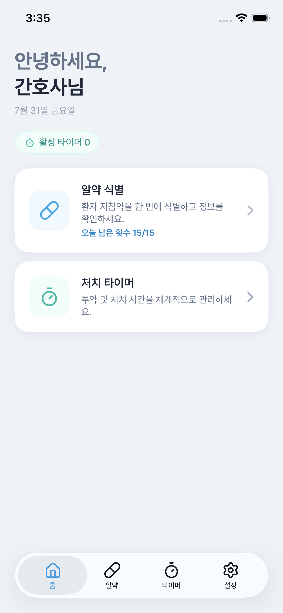
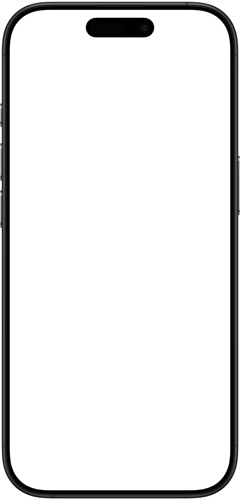
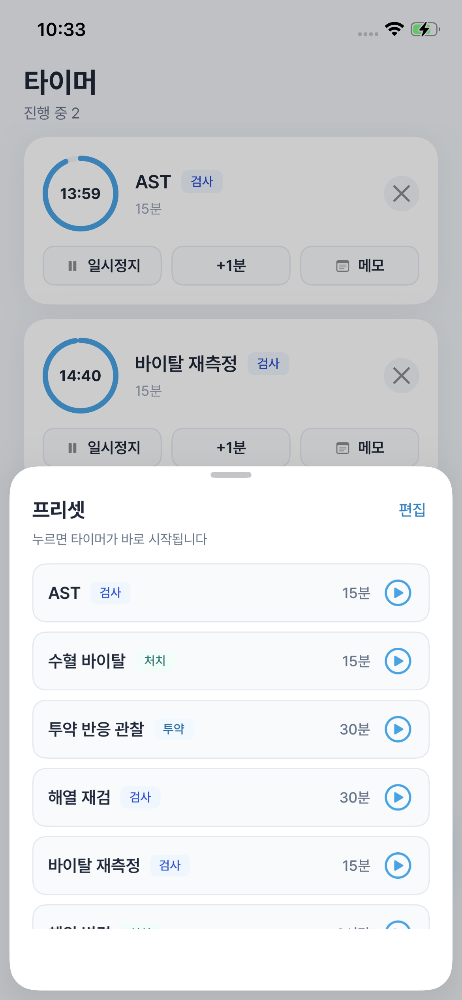
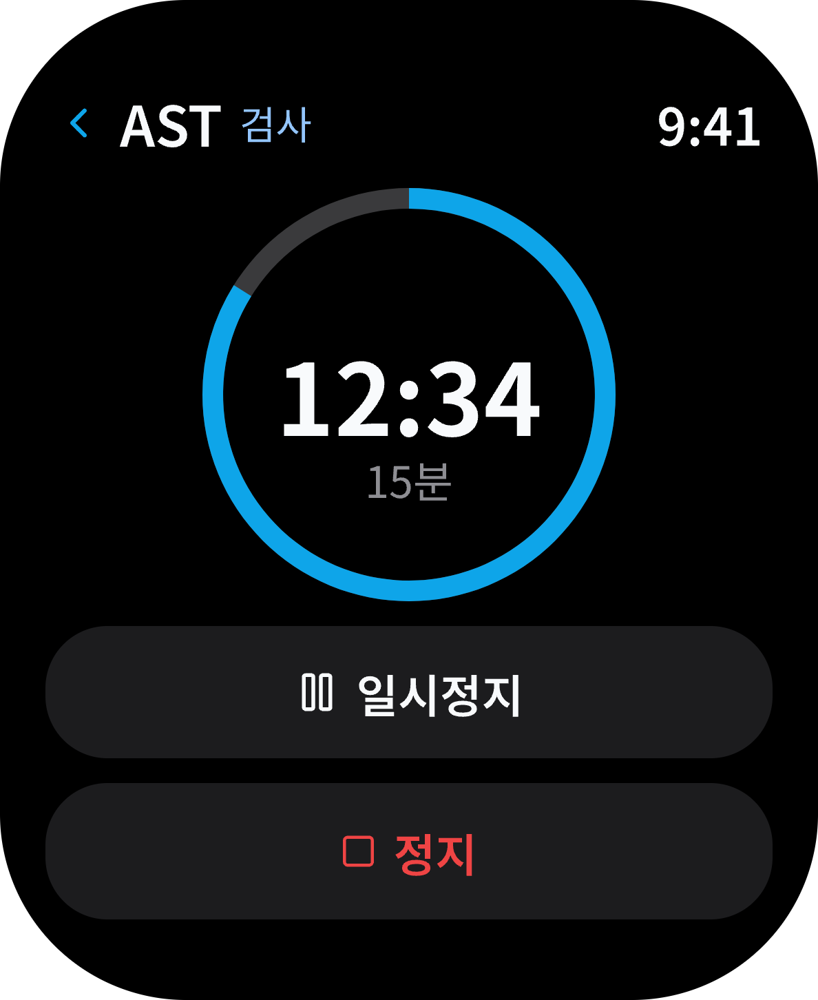
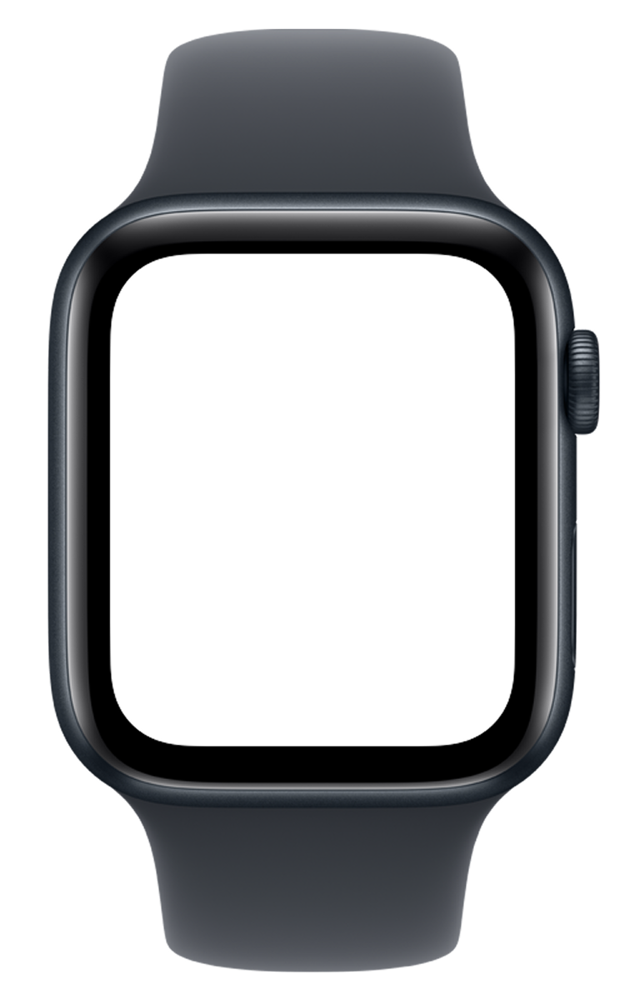
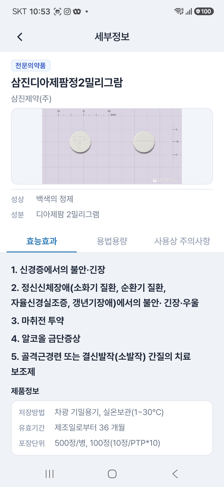
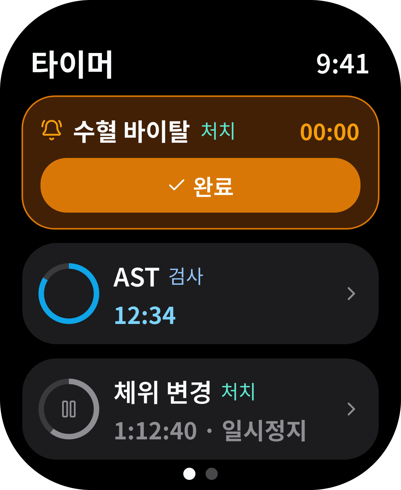

01
인식하고
사진 속 여러 알약의 위치를
한눈에 확인해요.

바쁜 근무에 함께하는 나의 간호 메이트
알약 확인도, 처치 시간 관리도.
손이 많이 가는 일은 널스메이트와 함께해요.
iOS에서 만나요 Android는 출시 준비 중






01 / 알약 식별
환자가 가져온 약이 낯설 때,
촬영부터 정보 확인까지 한 흐름으로.
사진 속 여러 알약의 위치를
한눈에 확인해요.

색상, 모양, 각인을 비교하며
알약 후보를 좁혀요.
효능·효과부터 주의사항까지
필요한 정보를 살펴봐요.

알약 식별 결과는 참고용 보조 정보입니다. 투약 전 반드시 처방 내용과 약품 라벨을 확인하고, 최종 판단은 의료진의 확인을 따라 주세요.
02 / 처치 타이머
동시에 돌아가는 여러 처치.
머릿속으로 세던 시간을 타이머에 맡겨보세요.
프리셋으로 간편하게 타이머를 시작해요.
진행 중인 처치와 남은 시간을 함께 확인해요.
처치 타이머는 iOS 26.1 이상에서 이용할 수 있어요.
03 / 워치 연동
휴대폰을 꺼내기 어려운 순간에도,
손목에서 처치 타이머를 확인하세요.

현재 iOS 앱을 App Store에서 다운로드할 수 있어요. 앱은 iOS 17 이상, 처치 타이머는 iOS 26.1 이상에서 이용할 수 있습니다. Android 앱은 출시 준비 중이에요.
알약 식별 결과는 참고용 보조 정보예요. 투약 전 반드시 처방 내용과 약품 라벨을 확인하고, 최종 판단은 의료진의 확인을 따라 주세요.
네, 널스메이트는 로그인 후 이용할 수 있어요. Google, Apple, 카카오 계정으로 시작할 수 있습니다.
지원 페이지를 방문하거나 2park1bae@gmail.com으로 보내주세요. 현장의 의견을 기다리고 있어요.
오늘도 애쓰는 당신에게
휴대폰에 맞는 다운로드 안내로 연결돼요.
다운로드 페이지 열기